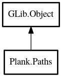

Paths
Object Hierarchy:

Description:
public class Paths : Object
Content:
Properties:
- public File HomeFolder { protected set; get; }
User's home folder - $HOME
- public File DataFolder { protected set; get; }
Path passed in to initialize method should be Build.PKGDATADIR
- public File ThemeFolder { protected set; get; }
DataFolder/themes
- public File ConfigHomeFolder { protected set; get; }
HomeFolder/.config
- public File DataHomeFolder { protected set; get; }
HomeFolder/.local/share
- public File CacheHomeFolder { protected set; get; }
HomeFolder/.cache
- public ArrayList<File> DataDirFolders { protected set; get; }
/usr/local/share/:/usr/share/
- public File AppConfigFolder { protected set; get; }
defaults to ConfigHomeFolder/app_name
- public File AppDataFolder { protected set; get; }
defaults to DataHomeFolder/app_name
- public File AppThemeFolder { protected set; get; }
defaults to AppDataFolder/themes
- public File AppCacheFolder { protected set; get; }
defaults to CacheHomeFolder/app_name
- public string AppName { protected set; get; }
application name which got passed to initialize
Static methods:
- public static void initialize (string app_name, string data_folder)
Initialize the class, creating the GLib.File
instances for all common paths. Also ensure that any writable directory exists.
- public static bool ensure_directory_exists (File dir)
Creates the directory if it does not already exist
Inherited Members:
All known members inherited from class GLib.Object
- @new
- new_valist
- newv
- add_toggle_ref
- add_weak_pointer
- bind_property
- connect
- constructed
- disconnect
- dispose
- dup_data
- dup_qdata
- freeze_notify
- @get
- get_class
- get_data
- get_property
- get_qdata
- get_type
- notify_property
- @ref
- ref_sink
- replace_data
- replace_qdata
- remove_toggle_ref
- remove_weak_pointer
- @set
- set_data
- set_data_full
- set_property
- set_qdata
- set_qdata_full
- steal_data
- steal_qdata
- thaw_notify
- unref
- watch_closure
- weak_ref
- weak_unref
- notify
- ref_count